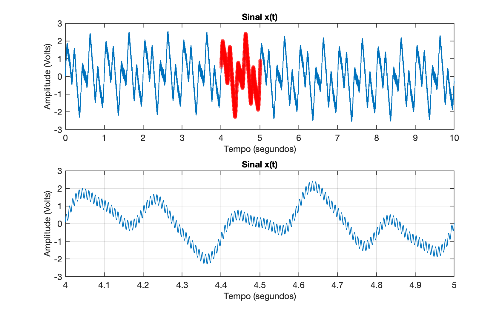
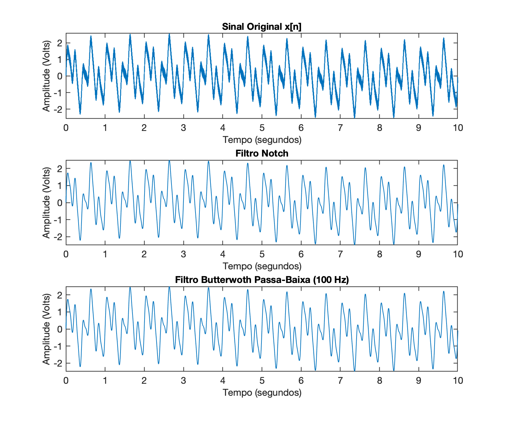
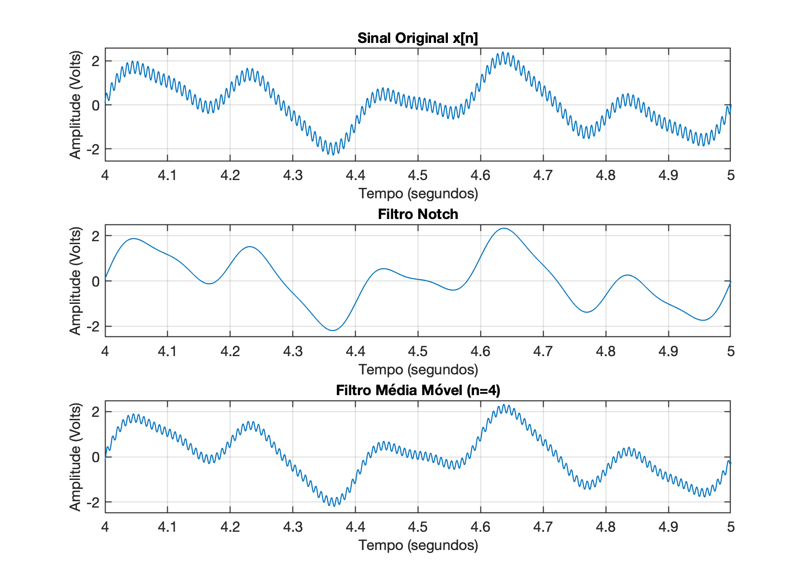

Seja o sinal presente no arquivo sinal_x3.txt (disponível também aqui: https://fpassold.github.io/Process_Sinais/sinal_x3.txt). Este sinal foi capturado usando frequência de amostragem de 1 KHz. Sabe-se que este sinal foi corrompido por ruído da rede elétrica na frequência de 120 Hz.
O gráfico deste sinal aparece abaixo:

Este trabalho é composto por 6 itens, à saber.
Pede-se:
Projete e aplique um Filtro Notch melhorado para eliminar o ruído em 120 Hz;
Aplicaçao de um Filtro Passa-Baixas Butterworth de 5a-ordem com frequência de corte em 100 Hz.
Os parâmetros e destr filtro podem ser obtidos usando-se a função butter() do Matlab:
x
>> fs = 1E3; % 1 KHz>> [b a] = butter( 5, 0.2, 'low') % 0,2 = 100/500b = 0.0012826 0.0064129 0.012826 0.012826 0.0064129 0.0012826a = 1 -2.9754 3.806 -2.5453 0.88113 -0.12543>> % O que resulta na seguinte função transferência:>> H=tf(b, a, 1/fs);>> zpk(H) 0.0012826 (z+1)^5 ---------------------------------------------------------- (z-0.5095) (z^2 - 1.097z + 0.3554) (z^2 - 1.369z + 0.6926) Sample time: 0.001 secondsDiscrete-time zero/pole/gain model.
Aplique um Filtro de Média Móvel de 8 passos sobre o sinal ;
Aplique um Filtro de Média Móvel de 4 passos sobre o sinal ;
Aplique um Filtro de Média Móvel de 20 passos sobre o sinal ;
O sinal usado neste trabalho, além de estar contaminado por ruído em 120 Hz, possui uma leva "oscilação de base" ocorrendo numa frequência muito baixa (só perceptível quando se visualiza 10 segundos ou mais do sinal). Além disto, sabe-se que o sinal que se deseja recuperar (filtrar), só possui 2 frequências esperadas (com amplitudes relevantes) ocorrendo abaixo dos 10 Hz (mas acima dos 1 Hz). Se for realizada uma FFT sobre o sinal (levantado a resposta espectral de ), poderá ser perbido que em existe ainda um outro componente frequencial indesejável além do ruído em 120 Hz, e da "oscilação de base". Tente identificar este outro ruído (sua frequência e amplitude) e projete um segundo filtro capaz de remover este componente indesejável. Este segundo filtro age em "cascata", depois que o primeiro filtro (Notch melhorado ou Butterworth) removeu o ruídio em 120 Hz.
Em todos os projetos, apresente:
Gráfico do sinal original com ruído e gráfico do sinal filtrado dentro do período de 0 à 10 segundos; Atenção: à partir do item 1, na mesma figura deve aparecer um gráfico mostrando o sinal original com ruído , um segundo gráfico mostrando o sinal filtrado usando Filtro Notch Melhorado e um terceiro gráfico mostrando a saída do filtro associado com o item 2, 3, 4, 5 ou 6. Algo como por exemplo:

"Zoom" do gráfico anterior, ressaltando o período de tempo entre 4 e 5 segundos (igual ao mostrado na parte inferior da figura anterior);
Atenção: à partir do item 1, na mesma figura deve aparecer um gráfico mostrando o sinal original com ruído , um segundo gráfico mostrando o sinal filtrado usando Filtro Notch Melhorado e um terceiro gráfico mostrando a saída do filtro associado com o item 2, 3, 4, 5 ou 6. Algo como por exemplo:

Apresente a dedução, cálculos usados para desenvolver o filtro e obter os coeficientes e do fitlro. Apresente os valores encontrados.
Para os itens 1, 2 e 6 apresente também a função transferência do filtro e seu diagrama pólo-zero ou ROC.
Para os itens 1, 2 e 6 apresente também o diagrama de magnitude (e opcinalmente o de fase) retratando a curva de resposta espectral do filtro projetado.
Para o item 2 apresentar os cálculos adotados para obteção do filtro usando a função butter().
Para o item 6 é esperada a apresentação do Espectro Frequencial do sinal com comentários associados à composição deste sinal e justificativas propondo o projeto do filtro deste item. Sugere-se realizar um "zoom" sobre o gráfico da resposta espectral ressaltando as frequênicas na faixa de 0 até 12 Hz.
Acrescente no final de cada projeto e depois de apresentar os resultados obtidos, algum comentário curto (prágrado de no máximo 3 linhas), ressaltando o que aconteceu.
Você pode apresentar os comandos usado no Matlab para realizar os projetos e ober os resultados mostrados. Sugere-se uma espécie de "manual" explicado resumidamente cada etapa do projeto, equações, cálculos e apresentando os gráficos conforme o projeto vai sendo desenvolvido. A parte final de cada projeto culmina com o gráfico dos sinais (sinal original sinal filtrado), eventualmente sendo comparando os resultados obtidos com a saída do Filtro Notch melhorado (item 1).
Observação final: Este trabalho pode ser executado por equipes de no máximo 3 alunos.
Dead-line: 27/06/2024 (no máximo).
Entrega: enviar arquivo PDF para o e-mail do professor: fpassold@upf.br.
Trabalho proposto e solucionado em aproximadamente 3,5 horas (com excessão do filtro para item 6).
🌊 Fernando Passold 📬 ,